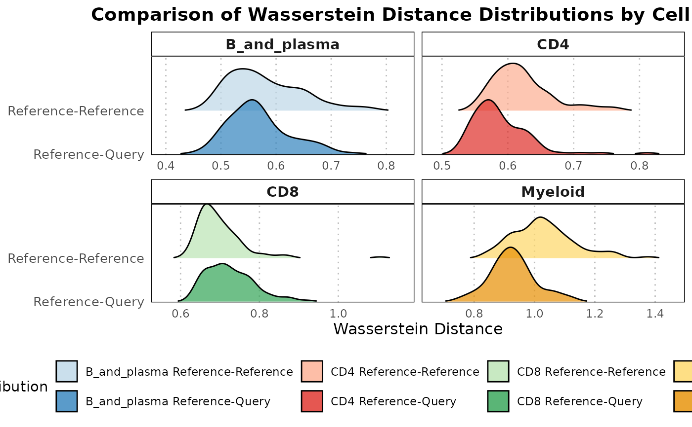

R/calculateWassersteinDistance.R
calculateWassersteinDistance.RdThis function calculates Wasserstein distances between a query dataset and a reference dataset, as well as within the reference dataset itself, after projecting them into a shared PCA space.
calculateWassersteinDistance(
query_data,
reference_data,
ref_cell_type_col,
query_cell_type_col,
pc_subset = 1:5,
n_resamples = 300,
assay_name = "logcounts"
)A SingleCellExperiment object containing a numeric expression matrix for the query cells.
A SingleCellExperiment object with a numeric expression matrix for the reference cells.
The column name in the colData of reference_data that identifies cell types.
The column name in the colData of query_data that identifies cell types.
A numeric vector specifying which principal components to use. Default is 1:10.
An integer specifying the number of resamples to generate the null distribution. Default is 300.
The name of the assay to use for computations. Default is "logcounts".
A list with the following components:
A numeric vector of Wasserstein distances computed from resampled pairs within the reference dataset.
The mean Wasserstein distance between the query dataset and the reference dataset.
A character vector containing the unique cell types present in the reference dataset.
The function begins by projecting the query dataset onto the PCA space defined by the reference dataset. It then computes Wasserstein distances between randomly sampled pairs within the reference dataset to create a null distribution. Similarly, it calculates distances between the reference and query datasets. The function assesses overall differences in distances to understand the variation between the datasets.
Schuhmacher, D., Bernhard, S., & Book, M. (2019). "A Review of Approximate Transport in Machine Learning". In Journal of Machine Learning Research (Vol. 20, No. 117, pp. 1-61).
# Load data
data("reference_data")
data("query_data")
# Extract CD4 cells
ref_data_subset <- reference_data[, which(reference_data$expert_annotation == "CD4")]
query_data_subset <- query_data[, which(query_data$expert_annotation == "CD4")]
# Selecting highly variable genes (can be customized by the user)
ref_top_genes <- scran::getTopHVGs(ref_data_subset, n = 500)
query_top_genes <- scran::getTopHVGs(query_data_subset, n = 500)
# Intersect the gene symbols to obtain common genes
common_genes <- intersect(ref_top_genes, query_top_genes)
ref_data_subset <- ref_data_subset[common_genes,]
query_data_subset <- query_data_subset[common_genes,]
# Run PCA on reference data
ref_data_subset <- scater::runPCA(ref_data_subset)
# Compute Wasserstein distances and compare using quantile-based permutation test
wasserstein_data <- calculateWassersteinDistance(query_data = query_data_subset,
reference_data = ref_data_subset,
query_cell_type_col = "expert_annotation",
ref_cell_type_col = "expert_annotation",
pc_subset = 1:5,
n_resamples = 100)
plot(wasserstein_data)
